Ardour
Dieser Artikel wurde für die folgenden Ubuntu-Versionen getestet:
Ubuntu 16.04 Xenial Xerus
Ubuntu 14.04 Trusty Tahr
Zum Verständnis dieses Artikels sind folgende Seiten hilfreich:
Ardour  ist ein Harddisk-Recorder und ein Audio-Workstationprogramm. Ursprünglich ein ProTools-Klon, hat es sich heute in Features und Bedienkonzept emanzipiert. Es bietet Audiospuren in unbegrenzter Zahl, in Verbindung mit JACK mächtige Routingfunktionen, ausgefeiltes Mixing, vollständige Automatisierung, Undo und Redo auch nach Beenden und Neustart des Programms, Unterstützung vielfältiger professioneller Audioformate (einschließlich Wav64, Broadcast etc.), regionenbasierte Bearbeitung mit einfacher Erstellung von Crossfades u.v.m. Jeder Bearbeitungsschritt ist nicht-destruktiv, auch Schnitte und Löschen einzelner Abschnitte von Audioaufnahmen lassen sich leicht rückgängig machen. Alle Aktionen im Mixer und in Effekt-Plugins geschehen in Echtzeit. Man hört also sofort, was geschieht, wenn man einen Regler bewegt.
ist ein Harddisk-Recorder und ein Audio-Workstationprogramm. Ursprünglich ein ProTools-Klon, hat es sich heute in Features und Bedienkonzept emanzipiert. Es bietet Audiospuren in unbegrenzter Zahl, in Verbindung mit JACK mächtige Routingfunktionen, ausgefeiltes Mixing, vollständige Automatisierung, Undo und Redo auch nach Beenden und Neustart des Programms, Unterstützung vielfältiger professioneller Audioformate (einschließlich Wav64, Broadcast etc.), regionenbasierte Bearbeitung mit einfacher Erstellung von Crossfades u.v.m. Jeder Bearbeitungsschritt ist nicht-destruktiv, auch Schnitte und Löschen einzelner Abschnitte von Audioaufnahmen lassen sich leicht rückgängig machen. Alle Aktionen im Mixer und in Effekt-Plugins geschehen in Echtzeit. Man hört also sofort, was geschieht, wenn man einen Regler bewegt.
Ardour besitzt eine Reihe eigener Audio-Effekte, unterstützt darüber hinaus die nativen Linux-Plugins in den Formaten LV2 und LADSPA. Diese Plugins lassen sich in einzelne Mixerspuren und/oder in den Masterkanal einfügen. Effekte lassen sich auch semi-destruktiv "anwenden".
| 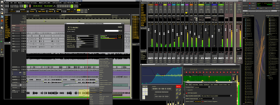 |
| Ardour auf zwei Bildschirmen |
Ardour ist derzeit in vier Versionen erhältlich:
Ardour 2 gibt es seit 2007. Es läuft auch auf alter Hardware und deckt im reinen Audiobereich sehr viele Aufgaben ab. Auch wenn Ardour 2 in den Funktionen nicht mehr fortentwickelt wird, pflegen es die Entwickler weiterhin. Man kann es also ohne Bedenken verwenden. Für Umsteiger von anderen Betriebssystemen scheinen wichtige Funktionen in Ardour 2 zu fehlen - so beherrscht es (noch) keine Videospuren und hat (ebenfalls noch) keine MIDI-Sequencingfunktionalität. Hier sollte man nicht vergessen, dass es unter Linux leicht möglich ist, verschiedenste Programme zusammenarbeiten zu lassen, die sich jeweils auf bestimmte Aufgaben konzentrieren.
Ardour 3 wurde 2013 freigegeben
 . Gegenüber Ardour 2 war es in vielerlei Hinsicht weiterentwickelt worden. Bedeutend war zum einen der Umstand, dass Ardour 3 nun den Umgang mit Videospuren beherrschte; und zum anderen standen umfangreiche MIDI-Funktionen zur Verfügung. Auch der Komfort beim Importieren von Audioformaten, deren Abtastfrequenz sich von derjenigen des jeweiligen Ardour-Projektes unterscheidet, wurde verbessert. Gegenüber Ardour 2 hatten sich schließlich noch einige Befehlszuordnungen in den Menüs verändert. Ardour 3 wurde in mehr oder weniger regelmäßigen Abständen aktualisiert und in seinen Funktionen erweitert. Durch die Fortschritte, die Ardour 4 gebracht hat, kann man Ardour 3 heute als technisch überholt betrachten.
. Gegenüber Ardour 2 war es in vielerlei Hinsicht weiterentwickelt worden. Bedeutend war zum einen der Umstand, dass Ardour 3 nun den Umgang mit Videospuren beherrschte; und zum anderen standen umfangreiche MIDI-Funktionen zur Verfügung. Auch der Komfort beim Importieren von Audioformaten, deren Abtastfrequenz sich von derjenigen des jeweiligen Ardour-Projektes unterscheidet, wurde verbessert. Gegenüber Ardour 2 hatten sich schließlich noch einige Befehlszuordnungen in den Menüs verändert. Ardour 3 wurde in mehr oder weniger regelmäßigen Abständen aktualisiert und in seinen Funktionen erweitert. Durch die Fortschritte, die Ardour 4 gebracht hat, kann man Ardour 3 heute als technisch überholt betrachten.
Ardour 4 wurde 2015 freigegeben
. Optisch und in der Handhabung unterscheidet es sich nur wenig von Ardour 3, unter der Haube ist aber eine Fülle von Details weiterentwickelt und teilweise deutlich verbessert worden. Unter anderem kann das Programm besser mit sehr großen Projekten umgehen und beansprucht den Arbeitsspeicher im ganzen deutlich weniger; der Umgang mit MIDI-Daten wurde verbessert, das Audio- und MIDI-Arrangementfenster bietet zusätzliche Funktionen. Ardour 4 benötigt anders als seine Vorläufer nicht mehr zwingend den Soundserver JACK, sondern kann auch unmittelbar mit ALSA zusammenwirken. Es läuft außerdem anders als Ardour 3 auch unter OS X und nach Angaben der Entwickler sogar unter Windows.
Ardour 5 wurde im August 2016 freigegeben
. Die Handhabung gleicht weitgehend der von Ardour 3 und 4; sie wurde um einige Details erweitert. Unter der Oberfläche sind abermals viele Details verbessert und Fehler beseitigt worden. Die Palette der Farbgestaltungen wurde vergrößert. Das Verhalten der Fenster für das Mischpult und für die Einstellungen wurde variabler gestaltet. Ab dieser Version läuft Ardour offiziell unter Windows.
Je nach Ubuntu-Distribution sind in den Paketquellen unterschiedliche Ardour-Versionen enthalten. Mit Blick auf die umfangreichen Verbesserungen ist aber der Umstieg auf Ardour 4 oder 5 oder zumindest dessen Parallelinstallation sehr zu empfehlen. Linux-Multimedia-Distribution wie LibraZIK  , AVLinux und besonders Ubuntu Studio greifen in ihren standardmäßigen Paketquellen mitunter nicht auf die aktuellste Ardour-Version zurück. Auch dort kann man testweise eine Parallelinstallation der neuesten Version von Ardour 5 (Vorgehensweise siehe unten) vornehmen.
, AVLinux und besonders Ubuntu Studio greifen in ihren standardmäßigen Paketquellen mitunter nicht auf die aktuellste Ardour-Version zurück. Auch dort kann man testweise eine Parallelinstallation der neuesten Version von Ardour 5 (Vorgehensweise siehe unten) vornehmen.
Hinweis:
Es ist empfehlenswert, vor der Erstinstallation von Ardour 5 von der Herstellerseite in jedem Fall die bereits in den jeweiligen Paketquellen enthaltene Ardour-Version zu installieren. Denn damit wird der Soundserver JACK automatisch eingerichtet – was man sonst per Hand erledigen müsste. Alle Ardour-Versionen (2, 3, 4 und 5) können bedenkenlos parallel installiert und verwendet werden.
Weitere Varianten von Ardour sind Waves' Tracks Live , das auf unkomplizierte Aufnahmen von Live-Konzerten optimiert ist, sowie Harrisons Mixbus und Mixbus 32C , die Ardour um ein virtuell-analoges Mischpult der Spitzenklasse erweitern.
Ardour und seine Peripherie¶
Alle professionellen Audioprogramme können unter Linux über den Soundserver JACK miteinander und mit externer Hardware kommunizieren, so dass Ardour leicht gemeinsam mit Programmen wie Rosegarden (MIDI) oder JAMin (Masteringprozessor) verbunden werden kann. Für das Bearbeiten von Videosoundtracks lässt sich auch schon Ardour 2 mit dem Videoplayer Xjadeo oder dem Schnittsystem Open Movie Editor synchronisieren. Einen Einblick in die praktische Nutzung - Audioschnitt, -montage und -mischung - am Beispiel der Herstellung von Podcasts oder Radiobeiträgen liefert der Artikel Ardour/Nutzung.
Installation¶
Ardour 2¶
Ardour 2 ist bis einschließlich Ubuntu 14.04 in den offiziellen Paketquellen enthalten. Zu installieren [1] ist
ardour (universe)
 mit apturl
mit apturl
Paketliste zum Kopieren:
sudo apt-get install ardour
sudo aptitude install ardour
oder
ardour-i686 (universe, optimiert für moderne Prozessoren bei 32bit-Betrieb)
mit apturl
Paketliste zum Kopieren:
sudo apt-get install ardour-i686
sudo aptitude install ardour-i686
Ardour 3¶
Ardour 3 ist unter Ubuntu 14.04 in den offiziellen Paketquellen enthalten. Zu installieren [1] ist:
ardour3 (universe)
mit apturl
Paketliste zum Kopieren:
sudo apt-get install ardour3
sudo aptitude install ardour3
Ardour 4¶
Ardour 4 ist ab Ubuntu 16.04 in den offiziellen Paketquellen enthalten. Zu installieren [1] ist:
ardour (universe)
mit apturl
Paketliste zum Kopieren:
sudo apt-get install ardour
sudo aptitude install ardour
Ardour 5¶
Ardour 5 ist nicht in den Paketquellen enthalten. Die etwa 90 bis 100 MB große Installationsdatei ist über die Download-Seite der Entwickler erhältlich.
Hinweis!
Fremdpakete können das System gefährden.
Zunächst lädt man die *.run-Installationsdatei herunter.
Dann öffnet man ein Terminalfenster [2] und bewegt sich in den Ordner, in dem die Datei liegt.
Die Installation erfolgt mit dem folgenden Befehl nach dem Muster:
/bin/sh ./A_Linux_VERSION.run
Im Falle der Version Ardour 5.12.0 trägt die Installationsdatei für ein 64-Bit-System die Bezeichnung Ardour-5.12.0-x86_64.run. Der zugehörige Befehl lautet also:
/bin/sh ./Ardour-5.12.0-x86_64.run
Hinweis:
Sobald man eine neue Ardour-5-Version installiert, fragt das Installationsprogramm, ob evtl. vorhandene ältere Programmversionen entfernt werden sollten. Wer ganz sichergehen möchte, kann eine bewährte alte Version parallel zur neuen behalten; wenn sich nämlich herausstellen sollte, dass einzelne Funktionen bei der neuen Version Probleme machen. Im Detail ergab sich das in der Vergangenheit z.B. beim Wechsel von Ardour 3.0 zu 3.1.10. Die Version 5.9 wiederum hatte ein Problem, Ardour-4-Projekte zu öffnen - was unter 5.8 noch funktionierte. Mehrere Versionen von Ardour auf einem Rechnersystem parallel zu betreiben, war und ist problemlos möglich.
Je nach BIOS- bzw. (U)EFI-Justage kann während der Installation eine Warnung auftauchen, die sich auf das Frequency Scaling der CPU bezieht (insbesondere bei Notebooks). Mit dem Frequency Scaling verträgt sich Ardour nicht in jeder Lebenslage. Die Warnung ist allerdings nicht dramatisch - man kann es erst einmal darauf ankommen lassen und auch mehrspurige Ardour-Projekte auf Rechnern mit aktiviertem Frequency Scaling bearbeiten. Sollten sich dann Hinweise ergeben, dass die Rechenleistung nicht ausreicht, kann man immer noch im BIOS/(U)EFI die Funktion deaktivieren.
Unterstützung von Plugin-Systemen¶
Für die Verwendung von VST-Plugins muss Ardour selbst entsprechend kompiliert werden. Inkompatible Lizenzen machen es unmöglich, fertige Ardourpakete mit VST-Unterstützung bereitzustellen.
Die beiden Ardour-2-Pakete unterstützten seit geraumer Zeit LADSPA-Plugins und bieten seit Ubuntu 10.04 von Haus aus auch LV2-Unterstützung. Mit Ardour 3, 4 und 5 können beide Systeme gleichermaßen verwendet werden.
Konzept und Merkmale¶
Ardour besteht im Wesentlichen aus zwei Sektionen, die auch die beiden zentralen Fenster ausfüllen:
einem Audio-Arrangement (mit dem Editor im Mittelpunkt)
und einem Mischpult.
Dieses Konzept unterscheidet sich daher von anderen Programmen, da es durch die Möglichkeiten im Verbund mit JACK ein nach allen Seiten offenes System darstellt und dadurch auch als ein (nahezu grenzenloses) Mischpult mit Audioarrangement-Funktionalität angesehen werden kann. So ist es möglich, jeden unter JACK laufenden Klangerzeuger, Arranger, Tracker o.ä. im Mischpult von Ardour mit anderen Signalen zu mischen, mit Effekten zu belegen oder auch darin aufzunehmen.
Hinweis:
Standardmäßig wird JACK über die graphische Software QjackCtl gesteuert. Was die Audio- und MIDI-Verbindungen angeht, ist die Darstellung dort womöglich nicht jedermanns Sache. Alternativ bietet sich hier das Programm Patchage an, in dem man mit der Maus auf dem Bildschirm buchstäblich Kabel verlegen kann (Patchage ist in den offiziellen Ubuntu-Paketquellen verfügbar). Noch einen Schritt weiter geht die JACK-Oberfläche in den Multimedia-Distributionen KXStudio und LibraZiK , die ein besonders aufwendiges und variables Fenstersystem enthält: die Suite Cadence. Auf manchen Rechnern ist zu beobachten, dass dieses System zuverlässiger läuft als QJackCtl. Es enthält auch eine patchage-ähnliche Oberfläche für Verbindungsherstellungen.
Tracks/Busse¶
Ardour kennt prinzipiell zwei Arten von Kanälen oder Spuren:
Tracks (Audiospuren)
Busse (Monitorkanäle).
Der grundlegende Unterschied ist, dass Busse nur einen frei belegbaren Kanalzug in einem Mischpult darstellen - und von mindestens einem Track "gefüttert" werden müssen -, Tracks hingegen sozusagen fest mit einer (digitalen) Bandmaschine verbunden sind - somit also auf Festplatte aufnehmen und von dort aus wiedergeben können. Ansonsten bestehen keine weiteren Unterschiede.
Dieses Konzept ist somit weitaus offener als beispielsweise das des proprietären Cubase, da es bei Ardour unter Monitorkanälen keine Trennung in Effekt-, Eingangs-, Monitor- oder Gruppenkanäle gibt und zusätzlich an jedem Eingang eines Monitorkanals beliebig viele Quellen in beliebig vielen Kanalkonstellationen anliegen können. So werden Busse also beispielsweise verwendet, um:
Kanäle zu Gruppen zusammenzufassen, z.B. für gemeinsame Effekte oder eine gemeinsame Automation
Send-Effekte bereit zu stellen, um z.B. ein Hallgerät von allen anderen Kanälen aus anzusteuern
Externe Klangerzeuger in eine Mischung mit einzubinden und mit Effekten zu versehen
Individuelle Monitorkanäle (oder gar ganze Monitorpulte) für einspielende Musiker zusammenzustellen
Alle Tracks oder Busse können innerhalb von Ardour eine beliebige Anzahl an Kanälen enthalten, somit kann man beispielsweise eine mehrkanalige Surroundaufnahme auf nur einer Audiospur aufzeichnen, die die entsprechende Anzahl Kanäle enthält. Die Kanalkonfiguration eines Tracks oder Busses kann zur Laufzeit, also nachträglich, frei geändert werden.
Ein/Ausgänge¶
Jeder Track oder Bus kann Signale aus beliebigen Quellen annehmen und ebenso an beliebige Empfänger senden. Das gleiche gilt für zwei spezielle Arten von "Effekten" im Mischpult: Inserts und Sends. Diese stellen an der Stelle, an der sie eingefügt wurden, einen Abgriff des Signals dar, das von dort aus jeden anderen Track/Bus, jeden anderen Eingang eines externen Programmes oder gar jeden Anschluss an der Soundkarte versorgen kann. Die "Verkabelung" kann dabei in der Benutzeroberfläche von JACK vonstatten gehen oder auch direkt in Unterfenstern in Ardour erfolgen. Durch diese nahezu grenzenlosen Möglichkeiten hebt sich Ardour im Verbund mit JACK deutlich von anderen HD-Recordinglösungen ab.
Eingänge¶
| 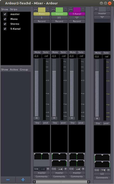 |
| Panoramaregler im Mischpult von Ardour 2, hier Mono-, Stereo- und 5-Kanal-Spur |
Jedem Eingang kann die Anzahl an Kanälen (im Sinne von Streams, also z.B. mono=1, stereo=2, surround=5) frei vergeben werden. Jeder dieser Eingangskanäle kann nun mit einer Quelle, die innerhalb von JACK verfügbar ist, verbunden werden. Eine Quelle kann beispielsweise sein:
Eingangsstufe der Soundkarte
Ausgang eines anderen Programms
Ausgang eines Tracks/Busses in Ardour
Ausgang eines Sends oder Inserts in Ardour
Eingänge finden sich vor allem an Audio- und Monitorkanälen (Rechtsklick  am oberen Ende eines Kanalzugs im Mischpult) und in Inserts.
am oberen Ende eines Kanalzugs im Mischpult) und in Inserts.
Ausgänge¶
Jeder Ausgang kann sein Signal an beliebige (auch an mehrere) Empfänger schicken. Eine unterschiedliche Anzahl an Kanälen in einem Track/Bus/Send/Insert erfordert natürlich eine spezielle Form der Balance- oder Panoramaregelung, was Ardour durch ein sehr flexibel nutzbares Konzept ermöglicht.
Im Falle von Ardour 2 liegen die Regler im unteren Fünftel des Kanalzuges:
Mono: einfacher Panoramaregler R/L
Stereo: 2 Panoramaregler, die als Balanceregler verknüpft werden oder auch gegenläufig arbeiten können
Mehrkanal: zweidimensional freie Anordnung aller Kanäle und Quellen
Ab Ardour 3 wurde die Gestaltung der Panoramaregler geringfügig verändert:
Mono: einfacher Panoramaregler R/L
Stereo: gekoppelter Panoramaregler für beide Kanäle. Standardmäßig ist er mittig fixiert ("Equal Power Stereo"). Über einen Rechtsklick
auf den Panoramaregler kann man ein Menü öffnen und dort Optionen aussuchen. Um wie gewohnt das Lautstärkeverhältnis der Stereokanäle zu verändern, wählt man "Stereo Balance" und kann danach den Regler verschieben.
| 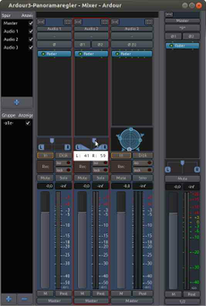 |
| Panoramaregler im Mischpult ab Ardour 3 |
Mehrkanal: Anordnung der Kanäle und Quellen über ein Zusatzfenster. Dorthin gelangt man über über einen Rechtsklick
auf das Symbol der Panoramaregler und Klick  auf den anschließenden Menüpunkt "Bearbeiten".
auf den anschließenden Menüpunkt "Bearbeiten".
Auch die Wahl der Anzahl an Kanälen in den Ausgängen kann in Ardour zu jeder Zeit erfolgen, wobei sich die Balanceregelung automatisch anpasst. Standardmäßig verbindet Ardour die Ausgänge von Spuren und Bussen mit dem Eingang des Masterkanals. Ein individuelle Verkabelung von Hand ist also nicht unbedingt erforderlich.
Mischpult¶
Das Mischpult kann alle vorhandenen Tracks und Busse darstellen. Am linken Rand befindet sich ein Fenster, in dem man bestimmt, ob einzelne Spuren oder ganze Gruppen ein- oder ausgeblendet werden sollen. Die Gruppenzuordnung von Spuren erfolgt jeweils im Kanalzug unter dem Fader. Am rechten Rand befindet sich der Masterkanal, der wenige Besonderheiten aufweist:
Wenn gewünscht, verbinden sich alle neu erstellten Spuren automatisch mit seinen Eingängen.
Er ist nicht löschbar.
Den Großteil des Fensters nehmen die Kanalzüge ein. Deren Sortierung ist beliebig im Bereich am linken Rand per Drag&Drop wählbar. Das Signal durchläuft einen Kanalzug von oben nach unten:
Eingangssektion (Wahl der Anzahl Kanäle, Verbinden mit anderen Quellen/Ausgängen)
Prefader Inserts (beliebig viele Effekte, Sends und Inserts, wenn der Signalfluss zu ihnen vor dem Fader abgegriffen werden soll). Im dortigen Untermenü können unter "Sends" auch Verbindungen zu anderen Ardour-Spuren gezogen werden.
Fader (Pegelregler) mit danebenliegender senkrechter Aussteuerungsanzeige
Postfader Inserts (beliebig viele Effekte, Sends und Inserts, zu denen der Signalfluss nach dem Fader abgegriffen werden soll)
Panorama/Balance (Wahl der Verteilung der Kanäle auf die Ausgangskonfiguration)
Ausgangssektion (Wahl der Anzahl Kanäle, Verbinden mit anderen Eingängen)
Arrangement¶
| 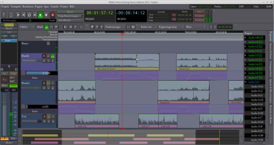 |
| Arrangement-Fenster in Ardour 3 |
Im Arrangement (auch "Editor-Fenster" genannt) können alle erstellten Tracks und Busse angezeigt und sortiert werden. Wie im Mischpult auch ist hier ein Zusammenfassen in Gruppe möglich. Die Sortierung wird auch hier per Drag&Drop im senkrechten Bereich am rechten Bildschirmrand vorgenommen, ebenso wie die Verwaltung der Spuren und Gruppen. Am linken Fensterrand kann man sich mit
⇧ +
E den Kanalzug der ausgewählten Spur einblenden lassen, daneben erscheinen untereinander die Bedienfelder der einzelnen Tracks und Busse. Den Großteil des Fensters nimmt das Arrangement selbst ein, in dem die Audiospuren mit ihren Inhalten auf der Zeitleiste angeordnet werden. Im Arrangement werden außerdem (auf separat einblendbaren Spuren) die Automationen des Mischpults visualisiert und können dort bearbeitet werden. Automatische Änderungen der Lautstärke oder des Panoramas (Balance) können als Kurven in spezielle Subspuren mit der Maus eingezeichnet oder (im Automationsmodus) direkt durch Bewegen der Regler zur Laufzeit aufgenommen werden.
Weitere Fenster¶
Für die Anhänger üppiger optischer Darstellung bietet Ardour neben dem schon beschriebenen Editor und Mischpult weitere Fenster. Gerade wenn man mehrere Bildschirme am Rechner anschließen kann und darauf umfangreiche Projekte mit vielen Spuren bearbeitet, wird das interessant. Unter anderem gibt es
eine vergrößerte Zeitanzeige
eine erweiterte Aussteuerungsanzeige ("Meterbridge")
Matrix-Fenster, in denen die Audio- und MIDI-Verbindungen zwischen Spuren und Bussen graphisch dargestellt werden (inhaltlich deckt sich das mit den Anzeigen im JACK-Verbindungsfenster)
ein Fenster, in dem man MIDI-Signale verfolgen kann
ein Fenster mit einer tabellarischen Auflistung von Markerpositionen, Punch in/out-Bereichen etc.
ein Fenster mit einer Legende zu den Tastenkürzeln (die man individuell festlegen kann)
einen "Bundle Manager" für das Zusammenfassen bestimmter Kanäle oder Spuren zu Gruppen
ein Log-Fenster mit Meldungen des Programms im laufenden Betrieb.
Arbeitet man nur an einem einzelnen Bildschirm, kann es sich immer noch lohnen, die unterschiedlichen Fenster auf mehrere Arbeitsflächen zu verteilen.
Elementarer Signalverlauf¶
In dieser Form durchläuft das Audiosignal also (hier von oben nach unten) mehrere Stufen:
Soundkarten-Eingangsstufe
ALSA (Alsamixer)
Ardour-Audiospur-Eingang
Ardour-Audiospur-Kanalzug (Pegel- und Panoramaregler, evtl. Automation)
Ardour-Audiospur-Ausgang
Ardour-Masterbus-Eingang
Ardour-Masterbus-Kanalzug (Pegel- und Panoramaregler, evtl. Automation)
Ardour-Masterbus-Ausgang
ALSA (Alsamixer)
Soundkarten-Ausgangsstufe
Audio-Export¶
Die verbreitetste Methode, ein Ardour-Projekt abzuschließen, ist der Export in eine einzelne Audiodatei. Die kann man anschließend z.B. einem externen Empfänger übermitteln, online verfügbar machen u.v.m. Beim Export werden standardmäßig sämtliche Einstellungen in Klang, Lautstärke usw. übernommen, stummgeschaltete Spuren werden ausgelassen etc. Neben vollständigen Projekten kann man auch einzelne Regionen aus dem Arrangement/Editorfenster exportieren. Die exportierten Dateien finden sich normalerweise im Ardour-Ordner /export.
Hinweis:
Ardour 3 kann auf älterer Hardware beim Export mehrspuriger Projekte mit Pegelautomation o.ä. mitunter die Rechenkapazitäten überfordern. Das Resultat sind Aussetzer oder Knackser in der exportierten Datei. Helfen kann es hier, unterschiedliche Exportformate zu testen - gerade auch RIFF-WAVE mit 32-bit-Float. Mit Hilfe des sehr variablen Konvertierungsprogramms Soundconverter läßt sich die Datei anschließend in das gewünschte Format umwandeln. Unter Ardour 4 wurde das Exportproblem gelöst, sodaß sich auch insofern der Umstieg auf diese Version oder auf das neuere Ardour 5 empfiehlt.
Ardour darf aus rechtlichen Gründen nicht direkt ins MP3-Format exportieren; möchte man eine MP3 erzeugen, so sollte man in einem ersten Schritt in ein unkomprimiertes Format exportieren und die Datei anschließend z.B. im Soundconverter in eine MP3 umwandeln.
Mitunter kann es sinnvoll sein, beim Export Dithering mit einzuarbeiten. Hier muss im Einzelfall das Ohr entscheiden.
Hinweis:
Sofern in einer exportierten Datei Verzerrungen auftreten, hängt das häufig mit zu hohen Audio-Pegeleinstellungen im Editor zusammen. Passieren kann das auch dann, wenn alle Pegelausschläge unterhalb von 0 dB bleiben. Das einfachste Gegenmittel ist, den Pegel des Master-Busses abzusenken. Mit einem Probehören der lautesten Stellen kann man den Pegel korrigieren: Bleibt er unterhalb von -7 dB, sollten Verzerrungen ausgeschlossen sein.
Parallele zu VST: die Effekt-Plugins¶
Zu den Linux-Eigenheiten gehört, dass die in windows-basierten Tonstudio-Systemen verbreiteten VST-Plugins, wie oben erwähnt, nur auf Umwegen und mit einigem Aufwand nutzbar sind. Der einfachste Ausweg ist, auf die quelloffenen Pendants zu VST auszuweichen. Für den Einsatz mit Ardour steht eine große Anzahl freier Effekt-Plugins zur Verfügung. Die Skala umfaßt unter anderem
graphische Equalizer
parametrische Equalizer
Kompressoren
Limiter
Enhancer
Hallgeräte (Reverb)
Echogeräte (Delay)
Verzerrer (Distortion)
Phaser, Chorus, Flanger
Oszillatoren, Oktavenverdoppler (Octaver)
und vieles mehr.
Verfügbar sind diese Effekte (insgesamt über fünfhundert Stück) in zwei unterschiedlichen Plugin-Formaten: LADSPA und LV2.
Dieser Effekt-Fundus steckt komplett im Metapaket:
ubuntustudio-audio-plugins
mit apturl
Paketliste zum Kopieren:
sudo apt-get install ubuntustudio-audio-plugins
sudo aptitude install ubuntustudio-audio-plugins
Viele auf Medienbearbeitung ausgelegte Distributionen wie Ubuntu Studio, AVLinux oder KXStudio bringen das Paket automatisch mit.
| 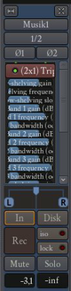 |
| Effekt-Parameter im Mischpult |
Einbinden kann man diese Plugins auf zweierlei Weise:
über das Ardour-Mischpult
oder über das Programm JACK Rack, ein virtuelles Effektgeräte-Magazin.
Beide Einbindungsformen kann man natürlich auch in ein und demselben Projekt parallel verwirklichen.
Einbindung über das Ardour-Mischpult¶
Hierzu kann man entweder das separate Mischpultfenster öffnen oder die Einstellungen im Kanalzug der einzelnen Spur vornehmen - den man über ⇧ + E am linken Rand des Editorfensters plazieren kann. Der Übersichtlichkeit halber zeigt das Beispiel die Schritte im Mischpultfenster; im einzelnen Kanalzug läuft es aber prinzipiell genauso.
Man hat die Wahl, die Effekte vor oder hinter dem Pegelregler einzubinden - unterschiedliche Konsequenzen können sich da ergeben bei solchen Effekten, die auf hohe oder niedrige Lautstärken an ihrem Eingang klanglich reagieren, z.B. Verzerrer. Ardour 2 bietet zur variablen Einbindung zwei schwarze Felder ober- und unterhalb des Pegelreglers. Ins gewünschte Feld setzt man einen Rechtsklick und öffnet damit ein umfangreiches Menü. Neben den bereits oben erwähnten Inserts und Sends findet man hier die Liste der Plugins - wahlweise sortiert nach ihrer Art und nach ihrem Autor. Die gewünschten Plugins kann man direkt anwählen oder über einen "Plugin-Manager" aussuchen.
Ab Ardour 3 ist auch der Pegelregler selbst ("Fader") im schwarzen Plugin-Feld aufgeführt - die Effekt-Reihenfolge bestimmt man hier mit der Maus: indem man um den Fader herum die einzelnen Plugins gruppiert.
Steuerung der Effekt-Parameter¶
Zu jedem Effekt gehören unterschiedliche Parameter. Um an sie heranzukommen, klickt man rechts auf den Effekt - ein Untermenü öffnet sich. Mit einem Klick auf "Steuerelemente" gelangt man in ein weiteres Menü. "Alle Regler zeigen" öffnet dort eine kompakte Übersicht aller Regler innerhalb des Fensters im Kanalzug.
| 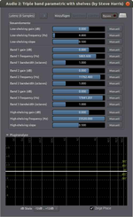 |
| Steuerungsfenster für Effekt-Parameter |
Möchte man es etwas größer vor sich sehen, klickt man auf "Mit einfachen Kontrollelementen editieren". Es öffnet sich ein Zusatzfenster, in dem man die Regler jetzt vergrößert vor sich hat. Zusätzlich kann man dort auch noch ein Analysefenster für das Plugin öffnen.
Die Veränderungen an den Reglern sind direkt im Abhörlautsprecher zu hören.
Automation der Effekt-Parameter¶
Das Zusatzfenster zur Steuerung der Effektparameter bietet auch die Möglichkeit, diese Parameter zu automatisieren: sie also mit dem Zeitablauf zu verändern und diese Veränderung im Ardour-Projekt fest aufzuzeichnen. Prinzipiell funktioniert das ganz ähnlich, wie es im Unterartikel zur Nutzung von Ardour für die Lautstärke-Automation beschrieben wird. Mit dieser Funktion kann man z.B. an bestimmten Punkten den Charakter eines Nachhalls verändern, einen Chorus-Effekt verstärken oder abschwächen, die Intensität einer Verzerrung anheben u.v.m.
Um die Effektparameter-Automation zu nutzen, klickt man im Zusatzfenster rechts neben dem betreffenden Parameter auf "Manuell" und wählt im dann aufgeklappten Menü "Schreiben". Nach dem Starten der Wiedergabe lässt sich die Wertekurve des Parameters in Echtzeit aufzeichnen: indem man den zugehörigen Regler währenddessen mit der Maus verschiebt. Um das Ergebnis abzuhören, schaltet man danach im selben Menü auf "Wiedergabe" oder "Ändern". Über den Knopf "a" im Spurenfenster des Ardour-Editors und die dortige Auswahl der anzuzeigenden Automationen kann man die aufgezeichnete Kurve auch im Editorfenster einblenden, um sie dort z.B. an einzelnen Punkten manuell mit der Maus zu verändern.
Einbindung über JACK Rack¶
Wem die Einbindung über das Ardour-Mischpult optisch nicht so behagt und wer die Automation der Effektparameter nicht nutzen möchte, der kann die Plugins auch über das JACK Rack einbinden. JACK Rack fungiert dabei wie ein imaginärer Schrank voller Effektgeräte, der im Studio neben dem Mischpult steht. Der Größe dieses Effekt-Schrankes und der Einbindung seiner Elemente ins System sind dabei technisch kaum Grenzen gesetzt. Es sind also zwei Schritte nötig:
Man sucht sich den gewünschten Effekt aus (baut ihn also sozusagen in den Schrank ein), konfiguriert ihn vor (man bestimmt z.B., wieviele Kanäle der Effekt haben soll)
und bindet ihn dann über JACK ins Audiosystem ein (man schließt also imaginär alle nötigen Kabel an).
Auswahl und Steuerung der Effekte¶
JACK Rack bietet eine ähnlich breite Effektauswahl wie die unmittelbare Plugin-Einbindung in Ardour. Hier kann man also aus dem Vollen schöpfen.
| 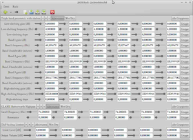 |
| JACK Rack in sechskanaliger Form |
Gut kalkulieren sollte man schon hier, an wievielen Punkten ein Effekt mit unterschiedlichen Parametern eingebunden werden soll. Es kann z.B. sein, dass man einen parametrischen Equalizer für die Ardour-Spur 1 anders einstellen möchte als für die Spur 2. Sollen für alle Spuren dieselben Einstellungen gelten, schickt man sie einfach alle parallel durch den Effekt.
Möchte man unterschiedliche Einstellungen nutzen, hilft ein Trick: Entweder man öffnet JACK Rack in mehreren Instanzen. Oder man legt JACK Rack mit einer Vielzahl von Kanälen an. Hat man also in Ardour vier Stereo-Spuren mit acht Kanälen angelegt und möchte den EQ voll ausreizen, legt man auch JACK Rack direkt mit acht Kanälen an. Nach einem Klick auf "Alle gruppieren" fächern sich die einzelnen Kanäle auf, und jeder Kanal des Effekts läßt sich dann in seinen Parametern separat einstellen. Möchte man einzelne Parameter für aller Kanäle gleichsetzen, klickt man in der zugehörigen Zeile auf "Gruppe".
Die Zahl der JACK-Rack-Kanäle läßt sich im Nachhinein zwar verändern; dann "vergisst" JACK Rack allerdings alle Effekte und muss wieder komplett neu bestückt werden. Um diese lästige Kleinarbeit zu vermeiden, sollte man also im Zweifelsfalle sicherheitshalber von vornherein eher mehr als weniger Kanäle anlegen.
Einbindung der Effekte¶
Jetzt kommt das JACK-Verbindungsfenster wieder ins Spiel. Dort sind sämtliche Kanäle von JACK Rack einzeln aufgeführt. Hier geht es also buchstäblich ans "Strippenziehen": die passende Ardour-Spur (oder der Ardour-Bus) muss durch den zugehörigen Kanal von JACK Rack geschickt werden.
| 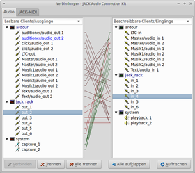 |
| Sechs JACK-Rack-Kanäle verkabelt |
Hinweis:
Alternativ kann man auch hier wieder die Verbindungen in Patchage verlegen.
Dabei steuert man das Lautstärkeverhältnis der Spuren und Kanäle in den meisten Fällen weiter über Ardour. Ausnahme: wenn ein Signal gleichzeitig unbearbeitet und auch vom Effekt beeinflußt verwertet werden soll. Um hier das Lautstärkeverhältnis zwischen unbearbeitetem und Effektsignal zu steuern, lässt sich in JACK Rack ein Verstärkermodul hinzuschalten, mit dem man die Lautstärke des Effektsignals separat regeln kann. Als Beispiele bieten sich hier Simple Amplifier oder GCIA an.
Hinweis:
Damit man die umfangreichen Verkabelungen des JACK Rack nicht jedesmal von neuem manuell verlegen muss, bietet es sich an, die Konstellation aus dem JACK-Verbindungsfenster jeweils zu speichern. JACK bietet dazu die Möglichkeit im Fenster "Steckfeld"; dort speichert man die aktuelle Konstellation aller Audio- und MIDI-Verkabelungen in einem Schnappschuss-Verfahren.
Signalbearbeitung über JAMin¶
| 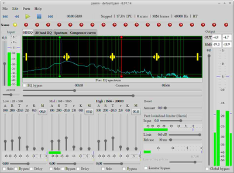 |
| JAMin mit parametrischem Equalizer (oben) und Dreiband-Kompressor (unten) |
Zusätzlich zu den Ardour-Plugins und JACK-Rack-Effekten kann man das Signal auch noch mit JAMin bearbeiten. JAMin ist ein Mastering-Programm, das nicht zuletzt wegen seiner komfortablen Bedienoberfläche und variablen Möglichkeiten interessant ist. Neben Equalizern und mehrbändigen Kompressoren enthält JAMin lineare Filter, Spektralanalysewerkzeuge, Limiter und zusätzliche Klangprozessoren.
Man setzt JAMin also am besten ziemlich weit hinten in die Audio-Kette - beispielsweise zwischen den Ardour-Master-Bus und die Soundkarten-Ausgangsstufe. Oder aber zwischen einen in Ardour noch vorgeschalteten Sammel-Bus und den Ardour-Master-Bus: wenn man beispielsweise das JAMin-gemasterte Signal (via Master-Bus direkt noch in Ardour) in eine fertige Audio-Datei exportieren möchte.
Aufwendigerer Signalverlauf¶
Bindet man alle Effekt-Plugins, JACK Rack, JAMin etc. in den Signalweg ein, ergibt sich also (von oben nach unten) eine ganze Reihe einzelner Stufen:
Soundkarten-Eingangsstufe
ALSA (Alsamixer)
Ardour-Audiospur-Eingang
Ardour-Audiospur-Kanalzug (Pegel- und Panoramaregler, evtl. Automation)
im Kanalzug evtl. eingeschleifte Effekt-Plugins mit frei wählbaren Ausgängen
Ardour-Audiospur-Ausgang
evtl. Effekte aus dem JACK Rack
Ardour-Sammelbus-Eingang
Ardour-Sammelbus-Kanalzug (Pegel- und Panoramaregler, evtl. Automation)
Ardour-Sammelbus-Ausgang
Mastering mit JAMin
Ardour-Masterbus-Eingang
Ardour-Masterbus-Kanalzug (Pegel- und Panoramaregler, evtl. Automation)
Ardour-Masterbus-Ausgang
ALSA (Alsamixer)
Soundkarten-Ausgangsstufe
Zusätzlich bietet Ardour auch die Möglichkeit, besondere Monitor-Busse anzulegen.
Ardour (ab Version 3) und MIDI¶
Zu den Fortschritten gegenüber Ardour 2 gehören bei Ardour 3 und mehr noch bei Ardour 4 und 5 umfangreiche MIDI-Funktionen. Nur ein Beispiel von vielen - und ein relativ einfaches - ist das Anbinden eines externen Controllers (also eines Steuerpultes mit "echten" Reglern und Knöpfen), mit dem sich der Bedienungskomfort wesentlich steigern läßt; auch wenn Ardour bereits mit Maus und Tastatur seinen vollen Funktionsumfang bietet. Die hier beschriebene Erst-Anbindung besteht aus einer ganzen Reihe einzelner Schritte; einmal erledigt, lässt sich die Prozedur aber auch weitgehend automatisieren.
Hinweis:
Wie oben angedeutet, sollte man im Falle von Ardour 3 bei Problemen mit dieser Funktion alternativ andere, mitunter auch ältere Versionen testen. Es kann vorkommen, dass diese besser funktionieren. Die hier beschriebene Anbindung eines MIDI-Controllers ist in begrenztem Maße auch schon unter Ardour 2 möglich; allerdings bietet Ardour 3 wesentlich mehr Komfort. Im Ganzen sind die Funktionen bei Ardour 4 noch einmal wesentlich verbessert worden, sodaß diese Version 4 wie auch Ardour 5 auch aus diesen Gründen noch einmal klare Vorteile gegenüber der Version 3 aufweist.
Die MIDI-Verbindung zwischen Ardour und dem Steuerpult verläuft über ALSA und JACK. Es gibt daneben eine alternative, etwas einfachere Methode über ALSA-MIDI, die aber womöglich weniger zuverlässig arbeitet und auf die dieser Artikel deshalb nicht näher eingeht (die Ardour-3-Hilfeseiten schildern sie unter "First option" näher). Die hier beschriebene Methode ("Second option") über JACK-MIDI läßt sich auf eine in den Hilfeseiten (unter "Automatically calling a2jmidid when starting Jack" und "Automating the qjackctl connection") beschriebene Weise auch automatisieren.
Als Beispiel kommt hier die Anbindung der Mackie MCU Pro zur Sprache. Mit anderen Pulten wie dem Behringer BCF/BCR2000 verfährt man analog.
Zur Vorbereitung installiert man ein kleines Programm, das die MIDI-Brückenfunktion zwischen ALSA und JACK wahrnimmt: a2jmidid . Dieses Programm ist in den offiziellen Paketquellen enthalten:
a2jmidid
mit apturl
Paketliste zum Kopieren:
sudo apt-get install a2jmidid
sudo aptitude install a2jmidid
Dann wird JACK präpariert. Dazu öffnet man in QjackCtl das Einstellungsfenster mit der Registerkarte "Einstellungen" und setzt dort "MIDI-Treiber" auf "Keiner". Außerdem geht man auf die Registerkarte "Verschiedenes" und entfernt dort den Haken bei "Unterstützung für ALSA-Sequenzer bereitstellen". Schließlich öffnet man der besseren Übersicht wegen das QjackCtl-Fenster "Verbindungen" und schaltet dort auf die Registerkarte "JACK-MIDI". (Zur Kontrolle: Dort ist die zuvor danebenliegende Registerkarte "ALSA-MIDI" jetzt verschwunden.)
Nun wird das Steuerpult (falls nicht schon geschehen) an den Rechner gehängt und eingeschaltet.
Ein Ardour-Projekt wird geöffnet. Um schneller zum Ziel zu kommen und nicht noch umständlich Spuren einrichten und Audiodateien importieren zu müssen, sollte das am besten ein bereits vorhandenes Projekt sein, idealerweise mit mehreren Spuren. Zum Üben noch besser (freilich nicht obligatorisch): wenn das Projekt auch schon Pegelautomationen enthält.
Im nächsten Schritt startet man a2jmidid in der Konsole:
a2jmidid -e
| 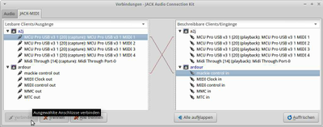 |
| JACK-Einstellungsfenster mit MIDI-Verbindungen |
In der Konsole erscheinen nun die Brückenverbindungen; außerdem kann man die einschlägigen "Anschlüsse" der Brücken im JACK-Fenster "Verbindungen" in der Registerkarte "JACK-MIDI" erkennen. Ober- oder unterhalb sind dort auch die MIDI-"Anschlüsse" von Ardour 3 oder 4 aufgelistet.
Dort besteht nun der nächste Schritt im Einrichten der nötigen Verbindungen: die Ardour-Ein-/Ausgänge
mackie controlwerden verbunden mit den Aus-/Eingängena2jvon a2jmidid.
Jetzt muss man Ardour nur noch darüber "informieren", dass nun ein Steuerpult angehängt ist. Das geschieht über das Ardour-Menü "Bearbeiten > Globale Einstellungen". Dort ruft man die Registerkarte "Eingabegeräte/Controller" auf und aktiviert das gewünschte Steuerpult. Für die Mackie MCU Pro ist es hier also das Feld "Mackie".
Ein Doppelklick
auf die blaue Fläche öffnet das Konfigurationsfenster "Control Protocol Options" für das Pult. Mit einem Klick auf "Discover Mackie Devices" erkennt Ardour das Pult, die Regler bewegen sich in die gewünschte Position, und auch die Anzeigen des Pultes werden aktiviert. Jetzt kann man beginnen, Ardour mit dem Pult zu bedienen. (Die Bedienungsmöglichkeiten mit Tastatur und Maus bestehen parallel weiterhin, sodass man sich in der individuellen Situation die bequemste oder eine Kombination aus mehreren aussuchen kann.)
| 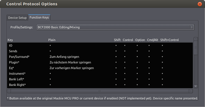 |
| Konfigurationsfenster für Taster eines Controllers |
Zusätzlich gibt es in diesem Konfigurationsfenster auf der Registerkarte "Function Keys" noch die Möglichkeit, den Tastern des angeschlossenen Pultes Funktionen zuzuordnen. Für das Behringer BCF2000, die Mackie MCU Pro und einige andere Pulte bringt Ardour bereits eine Vorkonfiguration mit; die kann man für das eigene Pult zu übernehmen versuchen, aber sinnvoller ist es, sich eine maßgeschneiderte Konfiguration anzulegen. In der Kombination mit den steuerpult-eigenen Alt - und ⇧ -Tasten lässt sich rasch eine Vielzahl von Ardour-Menübefehlen unterbringen. Zur Mackie MCU Pro gehören im Lieferumfang mehrere Schablonen, auf denen die Tasterbelegung für einige proprietäre DAW-Programme aufgeführt ist - die entsprechende Schablone wird dann auf die Pultoberfläche gelegt. Eine passende (Papier-)Schablone für Ardour kann man sich auf dieser Basis selbst herstellen.
Hinweis:
In den Multimedia-Distributionen LibraZiK, KXStudio und TangoStudio sind große Fortschritte bei der autmatischen Anbindung des externen Steuerpultes gemacht worden: Schon beim Start eines Ardour-Projektes wird das Pult erkannt und eingebunden. Die Funktion weist mitunter allerdings zumindest bei KXStudio noch Aussetzer auf, sodass man das Pult dann, wie oben beschrieben, per Hand einbinden muss.
Problembehebung¶
Fehlermeldung:"the disk system on your computer could not keep up with Ardour"¶
Diese Fehlermeldung bei Aufnahmen von Audio mit Ardour kann vielfältige Ursachen haben. Vor allem hängt der Fehler mit den niedrigen Audio-Hardware- Puffereinstellungen zusammen, mit denen Ardour standardmäßig arbeitet. Abhilfe kann das Ändern des "track-buffer-seconds"-Parameters in der Datei /.ardour2/ardour.rc bringen. (Das Verzeichnis liegt versteckt im Home-Verzeichnis des jeweiligen Nutzers). Alternativ kann man auch den Wert Frames/Periode im JACK-Einstellungsfenster erhöhen.
Der Standardwert für "track-buffer-seconds" beträgt "5" und kann zur Problembeseitigung erhöht werden.
Achtung!
Wird "track-buffer-seconds" auf einen zu hohen Wert eingestellt (>10) kann dies Performance und Latenz verschlechtern.
Des Weiteren kann dieser Fehler mit Performanceproblemen des Dateisystems/Laufwerks in Verbindung gebracht werden. Siehe hierzu den Artikel Tonstudio/Konfiguration#"noatime"
Nicht zu unterschätzen ist in diesem Zusammenhang auch die Umgebung, in der die Aufnahmen stattfinden. Während in ruhiger Umgebung zuhause oder im Studio alles bestens funktioniert, kann dieser Fehler bei Aufnahmen in einer Live-Situation oder im Proberaum plötzlich auftreten. Dies hängt mit den dort vorhandenen, starken Vibrationen zusammen, welche die Latenzzeiten der Festplatte beim Lesen und Schreiben dramatisch erhöhen und somit den Lese-/Schreibfluss behindern können. Unabdingbar für die Lösung dieses Problems ist eine ordentliche Absicherung des Datenträgers gegen Vibrationen. Zusätzlich hilft hier auch ein Erhöhen der "track-buffer-seconds"-Einstellung, wie oben beschrieben. Eventuell kann sich auch die Investition in ein sehr schnelles SSD-Speichergerät lohnen.
Wenn Ardour nicht startet¶
Je nach Hardware-Konfiguration und/oder verwendeter Linux-Distribution kann es hier schon einmal Schwierigkeiten geben, besonders im Falle von Ardour 2: der Start des Programms stockt oder bricht ab. In den meisten Fällen liegt das Problem im Zusammenspiel zwischen Ardour und JACK. Bei den nötigen Justagen kann die deutschsprachige Anleitung zu JACK eine gute Hilfe sein.
Um dem Problem auf die Spur zu kommen, kann es sinnvoll sein, JACK einmal separat zu starten und zu testen, ob er für sich allein genommen läuft. Tut er dies nicht, kann hier schon der Fehler liegen, ohne dass es etwas mit Ardour zu tun hätte.
Hier nur knapp zusammengefaßt ein paar schnelle Möglichkeiten zur Fehlerbeseitigung, wenn Ardour nicht starten will:
QjackCtl aufrufen, das Fenster "Einstellungen" öffnen und dort auf der Registerkarte "Einstellungen" die Justagen kontrollieren: besonders die Rubriken "Eingabegerät" und "Ausgabegerät". Gerade wenn mehrere Soundkarten im Rechner stecken oder zusätzliche USB-Audiomodule eingesteckt sind, kann JACK beim Neustart hier etwas durcheinanderbringen. Das gilt auch, wenn ein Controller über USB-MIDI eingesteckt ist: Manchmal will JACK ihn dann irrtümlich wie eine Soundkarte ansteuern - was natürlich nicht funktioniert. Da hilft nur, Ein- und Ausgabegerät ggf. per Hand korrekt einstellen.
Ggf. den Haken bei "Echtzeit" entfernen.
Es kann zusätzlich helfen, einen Haken bei "Soft Modus" zu setzen.
Falls diese JACK-internen Handgriffe nicht helfen, sollte man die Justagen der Soundkarte kontrollieren. Sollte hier eine andere Abtastfrequenz als in JACK eingestellt sein (im Falle von Karten mit dem ICE1712-Chip
kann das unter dem Standard-Ubuntu passieren), gibt das unter Umständen Probleme.
Sollten alle diese Wege nichts bringen, kann die Einrichtung einer auf Audiozwecke hin optimierten Linux-Distribution helfen: Unter Ubuntu Studio läuft die Kommunikation zwischen Ardour und JACK unter Umständen reibungsloser. KXStudio bietet darüber hinaus weitere Erleichterungen und Verbesserungen für das Audiosystem. Unter anderem lässt sich die gleichzeitige Anbindung mehrerer Soundkarten an JACK - die unter vielen anderen Distributionen knifflig sein kann - sehr leicht bewerkstelligen.
Hinweis:
Wenn man Ardour verwenden möchte, JACK sich aber permanent zu starten weigert, kann man ab Ardour 4 auf die Möglichkeit ausweichen, Ardour direkt mit ALSA kooperieren zu lassen; das gilt für Audio- wie auch für MIDI-Verbindungen. JACK bleibt dann außen vor.
Wenn man nichts hört¶
Wie oben im Abschnitt Konzept und Merkmale beschrieben, handelt es sich bei Ardour um ein recht aufwendiges Studiosystem, und ähnlich wie in einem wirklichen Studiomischpult mit seinen Kanalzügen, Sammelschienen etc. kann man vor dem Problem stehen, dass ein Signal, das man in den Eingang hineingibt, nicht dort herauskommt, wo man es eigentlich erwartet. Häufig ist in solchen Fällen eine Verbindung irrtümlich falsch geschaltet oder ein Pegelregler zugezogen. Die Überprüfungen beginnen sollte man in dem oben im Abschnitt Elementarer Signalverlauf umrissenen Bereich.
Zunächst sollte man im Bereich der Audiospur suchen. Die beste Übersicht bietet das Ardour-Mischpultfenster. Um herauszufinden, wo das Signal "hängenbleibt", schaltet man dort mit dem Knopf unterhalb der Pegelanzeige zwischen den unterschiedlichen Punkten um, an denen die Anzeige das Signal abgreift: direkt am Eingang - vor dem Pegelregler - hinter dem Pegelregler etc. Schlägt die Anzeige beispielsweise vor dem Pegelregler noch aus und dahinter nicht mehr, kann das simpel daran liegen, dass der Regler zugezogen war.
Hat man das Problem dann noch nicht beseitigt und sind Plugins in den Signalweg geschaltet, sollte man überprüfen, ob dort nicht irgendwo der Signalfluß unterbrochen ist - z.B. durch ein stummgeschaltetes Plugin.
Sofern die Pegelanzeige überall im Bereich der Audiospur ausschlägt, blickt man im Ardour-Mischpult auf die Pegelanzeige des Master-Bus: auch ihren Abgreifpunkt kann man zwischen den erwähnten Punkten umschalten. Schlägt sie schon am Eingang des Master-Bus nicht aus, so kann es daran liegen, dass die Verbindung zwischen der Audiospur und dem Master-Bus nicht geschaltet ist. Das kann man dann im Verbindungsfenster von JACK, in Patchage oder alternativ in den matrix-förmigen Verbindungsfenstern von Ardour korrigieren.
Ist im Bereich von Ardour alles in Ordnung, kann der Fehler u.a. in der Verbindung zur Audiokarte liegen. Aufwendigere Karten verfügen über eigene Steuerungssoftware in Form eigener kleiner Mischpulte: dort kann in manchen Fällen eine Audioverbindung falsch geschaltet oder ein Regler zugezogen sein. Ferner können solche Karten über zahlreiche Ein- und Ausgänge verfügen, die lediglich durchnumeriert sind, ohne näher beschriftet zu sein. In solchen Fällen kann man testweise einen Karten-Ausgang nach dem anderen an den Master-Bus legen, bis man das Signal hört und den gewünschten Ausgang gefunden hat.
Überraschende Rückkopplung nach dem Start¶
In seltenen Fällen kann es passieren, dass unmittelbar nach dem Ardour-Start laute Heul- oder Pfeiftöne aus den Lautsprechern kommen, die auf Rückkopplungen hindeuten. Sofern die Verbindungen in JACK unverdächtig sind, sollte man die Reglerstellungen
in einer ggf. vorhandenen Steuersoftware der Soundkarte
und besonders auch im Alsamixer überprüfen.
Dort setzt man probehalber einen Regler nach dem anderen auf Null, bis man den "Schuldigen" gefunden hat. Auch auf dieser Ebene können nämlich manchmal unerwünschte Rückkopplungen entstehen - womöglich sind sie noch "übriggeblieben" von der vorherigen Benutzung anderer Audioprogramme.
Probleme mit einzelnen Funktionen bei der MIDI-Anbindung eines Steuerpultes¶
Zumindest im Falle der Mackie MCU Pro kann es gelegentlich vorkommen, daß einzelne Funktionen nach Herstellen der MIDI-Verbindung nicht arbeiten: z.B. werden die Kanalbezeichnungen auf der LCD-Anzeige der MCU Pro nicht wiedergegeben, Ardour reagiert nicht auf die Laufwerkstasten, die Zeitanzeige der MCU Pro arbeitet nicht o.ä. Fehler dieser Art tauchen bei einzelnen Distributionen häufiger auf (Ubuntu Studio), bei anderen (KXStudio, TangoStudio, LibraZIK) seltener.
In solchen Situationen kann man sich mit dem simplen Schritt behelfen, alle MIDI-Verbindungen zu kappen, Ardour komplett zu schließen, JACK zu stoppen und QJackCtl zu schließen und danach das gesamte Procedere des Projektöffnens und der Verbindungsherstellung noch einmal durchzuführen. Sollte der Fehler auch dann noch nicht verschwunden sein, sollte man das System komplett neu starten. Nach erneutem Herstellen der Anbindung funktioniert sie dann erfahrungsgemäß.
Probleme bei der MIDI-Anbindung im Falle von Ardour 3¶
Grundsätzlich sollte man testen, ob die eingesetzte Ardour-3-Version mit dem individuellen Steuerpult harmoniert.
Die Version 3.5.357 brachte hier gegenüber den Vorgängerinnen große Fortschritte, indem Fehler beseitigt wurden. Gerade wenn man die Mackie MCU Pro einsetzen möchte, sollte man keine ältere Version mehr nutzen. Zumal die Ardour-Entwickler beim Erscheinen sowieso dringend die Aktualisierung auf diese Version als "critical bug release" empfahlen.
Bei der Pegelautomation mit dem früheren Ardour 3.1.10 oder neueren Versionen bis 3.5.308 und einer Mackie MCU Pro konnte es dazu kommen, dass die Rechenkapazität älterer Systeme im "Schreiben"- und noch mehr im "Ändern"-Modus überfordert wurde. Möglicherweise tritt der Fehler auch mit anderen Pulten auf. Daraus resultierten unsauber aufgezeichnete Lautstärkekurven, die sich als Zacken auf dem Bildschirm bemerkbar machten - das Ergebnis war akustisch unbrauchbar. Auch mit Blick darauf war also die Aktualisierung auf das fehlerfreie Ardour 3.5.357 dringend zu empfehlen.
Links¶
Extern¶
Ardour - Wikipedia
Opensource Audioworkstation
Tutorial über die Einrichtung eines professionellen Tonstudios einschließlich Ardour mit freier SoftwareTutorial: Mastering with JAMin and Ardour
- praktisches Beispiel zum Abmischen eines Ardour-Projektes in einem kalifornischen Studio, 03/2005Workshop - Die komplette DAW fürs Mini-Budget
- Einrichtung eines linux-basierten Open-Source-Tonstudiosystems mit Ardour auf alter Hardware, 01/2014

Spezielle Links zu Ardour 3, 4 und 5¶
Anleitung der Entwickler zu Ardour 4
- auch für Ardour 5 brauchbarillustrierte Anleitung zu Ardour 3
- auch für Ardour 4 und 5 brauchbarPDF-Anleitung der Entwickler zu Ardour 3
- auch für Ardour 4 und 5 brauchbarSeite zu Ardour 3 mit angeschlossenem kleinem Handbuch
- auch für Ardour 4 und 5 brauchbarUmfangreiche Anleitung zur Automation von Spur- und Effektparametern in Ardour 3
- auch für Ardour 4 und 5 brauchbar
Links zur Arbeit mit der Peripherie von Ardour¶
Ausführliche Bedienungs- und Justagehinweise zu JACK
, alternativ auch als PDF-VersionUmfangreiche Internetseite zum Einsatz von Linux im Audio- und Musikproduktionsbereich
- Erstellt mit Inyoka
-
 2004 – 2017 ubuntuusers.de • Einige Rechte vorbehalten
2004 – 2017 ubuntuusers.de • Einige Rechte vorbehalten
Lizenz • Kontakt • Datenschutz • Impressum • Serverstatus -
Serverhousing gespendet von